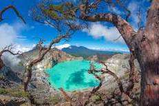
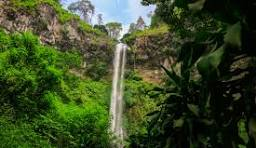

Gunung Bromo
Gunung Bromo merupakan salah satu wisata terkenal yang ada di Jawa Timuru

Kawah Ijen
Kawah Ijen merupakan salah satu wisata terkenal yang ada di Jawa Timur

Air Terjun Coban Rondo
Air Terjun Coban Rondo merupakan salah satu wisata terkenal yang berada di jawa timur.